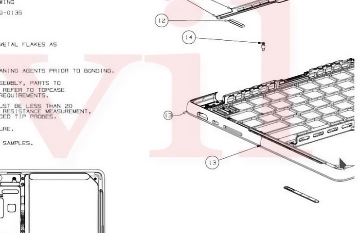

Apple 十月发布会杂谈
今年的十月发布会比以往的都短不少，同样甚至更大的信息量只用了不到一个小时，的确令人目不暇接。Apple 有不少关于产品的点没有在发布会视频中详述，只能靠发布会后一点一点发掘了。
造型
对 Apple 产品，特别是老产品线比较熟悉的读者，估计看到新 MacBook Pro 的外观，第一反应就是「这不是 iBook / PowerBook 吗？」
确实，几乎纯平的 A 面，呈圆弧过渡的 C、D面，无不昭示着那个 Unibody MacBook Pro 之前的时代独有的设计风格。但时殊世异，如今的新 MacBook Pro 可以看作是用新工艺（Unibody）对老设计的一次致敬。纷繁复杂的材料相接，被铝合金一体成型取代，曲线的过度也更显自然。唯一令人不满的，可能是过去九年大家早已看习惯的锐利边缘已经不再，只有在 M1 MacBook Pro 上才能一睹余晖。
脚垫
这应该是多年以来，Apple 第一次在官方渲染图里把脚垫画出来。对比 MacBook Air 和 MacBook Pro，实际存在感很强的在官方渲染图里踪迹全无，而在新 MacBook Pro 这边，怕不是比和尚头上的虱子还显眼。
究其原因，主要还是这次 D 壳的 Unibody 也包括了四个抬高底壳的圆柱，脚垫装在这四个圆柱上。纵使对脚垫讳莫如深如苹果，也不可能吧这四个铝合金组件当成房间里的大象，所以反映在渲染图上，就是这四个格外突出的脚垫了。这或许也是此次设计为何让人觉得不习惯的原因之一。
键盘
新 MacBook Pro 的键盘下沉区为黑色，和键帽颜色保持了一致。综合此前苹果一直在建立的「Pro = 黑」这对关系，估计这次只是针对外观进行了调整，实际的组装应该与之前没有区别，C 面仍是 Unibody 成型，此前泄露的设计图 似乎也能印证这点。

观察官网渲染图，下沉区的纹理与 C 面其他地方一致，应该不存在不同材料拼接。但目前这都只是推断，仍需以实际上手为准。
屏幕
新 MacBook Pro 采用了 mini-LED 屏幕，支持 ProMotion。官网只介绍了屏幕分辨率、对比度、亮度等基础信息，没有介绍这块屏幕的分区情况。回看发布会视频，唯一一张截图（似乎为 14 寸）包含了 401 * 64 = 2560 个调光分区，数量上和 iPad Pro 差不多。
照此换算，纵向应有 1/40 的区域是给菜单栏预留的。根据官网给出的参数，14 寸分辨率为 3014 * 1964，纵向砍去 1/40 剩下大概 1915，宽高比约为 15.7:10。考虑到现在苹果对于产品尺寸一向放飞自我，桌面环境下的屏幕比例对适配也没什么太大影响，这样就这样吧，起码仍然比较接近 16:10。
欢迎将您的想法、评论、意见、建议发送至 harveyjanson@icloud.com，请注明「讨论」字样，我会尽量回复。
- 1.这张图上纵向只有 39 个亮着，是因为以 16:10 显示媒体时，最上面一栏为黑色，不开灯，故纵向应为 40 行。 ↩